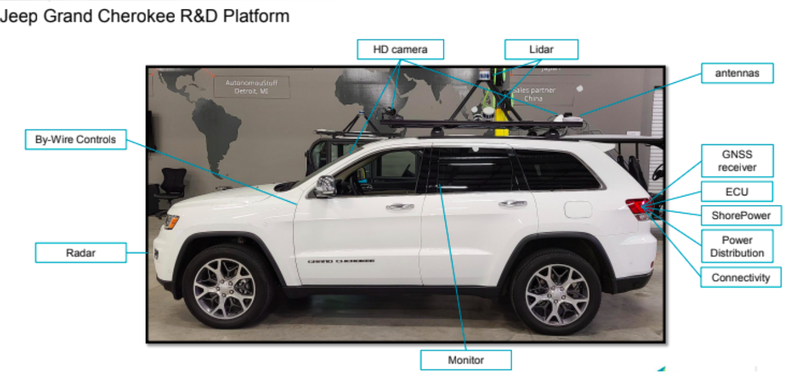
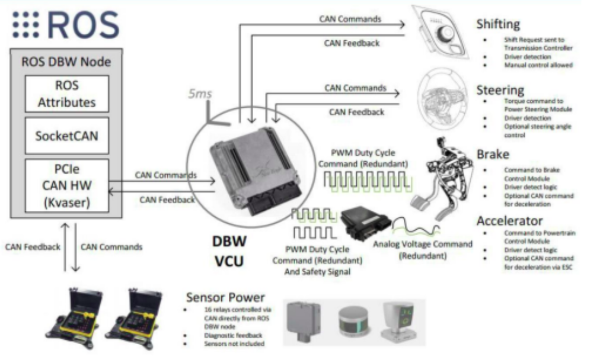
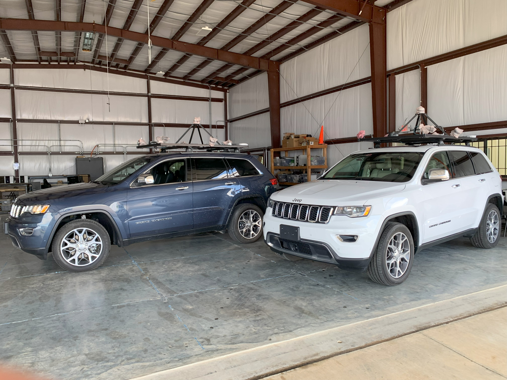

AVA: Autonomous Vehicle for All (May 2022 ~ August 2023)
Sponsor: Texas D.O.T (Department of transportation)
Consolidated/Affiliated Institution: UC Davis, UIUC / Texas A&M University
The project aims to bring the safety benefits of autonomous driving to all Americans by enabling
Automated Driving Systems (ADS) in rural environments. The goal is to develop a systematic and
scalable approach to the safe integration of automated vehicles into the nation's transportation system.
Among the various fields of autonomous systems, perception is one of the most significant.
For perception, sensors including cameras, LiDAR, and radar are used to detect
objects around the vehicle and transfer the information to enable decision-making.
Project Website: AVA: Autonomous Vehicle for All




1. Data Collection & Annotation
To develop models for autonomous vehicles, data was collected and labeled.
We collected data by driving the vehicle around the college campus and along selected routes. The collected
data includes images, videos, point clouds, IMU and GPS data, all recorded in ROS bags.
The data was labeled for 2D object detection, segmentation, and road/lane detection.

2. Edit and Create Vector Map
From the ROS bags, we extracted point cloud data and created vector maps by cleaning, filtering,
and vectorizing the raw data. Through this work, multiple vector maps were created and then
integrated into a single unified vector map. Finally, we validated and refined the vector
map by comparing the route shapes to the final output.

3. Research & Develop of model
After the data was completely collected and annotated, we used it to
develop the models. The models were adjusted based on dataset quality,
intended usage, and other factors. For research and development, we experimented with
many different methods, including modifying model architecture, adjusting module structures,
tuning hyperparameters, changing training schemes, modifying loss functions,
and fine-tuning with pre-trained models.
4. Implement Algorithm in Simulation
By implementing models in a simulated environment using recorded ROS bags, we validated that models and algorithms
worked properly before loading them onto the vehicle and testing in real-time and real-world conditions.
5. Test Algorithms in the field (in Real Time & Real World)
Once models and algorithms were verified in simulation, we loaded them onto the actual vehicle
and integrated them in launch files to run simultaneously. While testing in real-time and real-world conditions,
if any defects or weaknesses were observed, we collected the data by recording them in ROS bags.
After reviewing and making corrections, we repeated steps 3 and 4 iteratively until satisfactory performance was achieved.